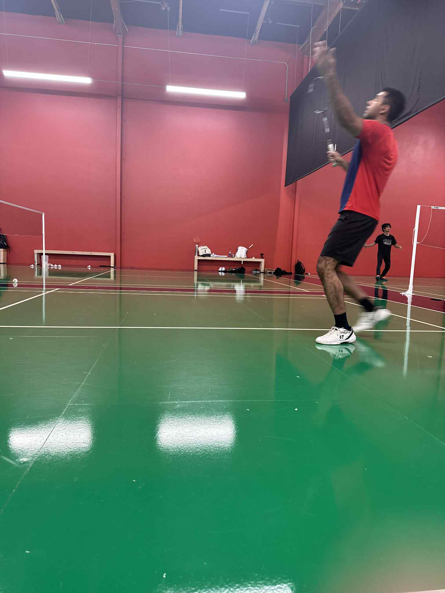
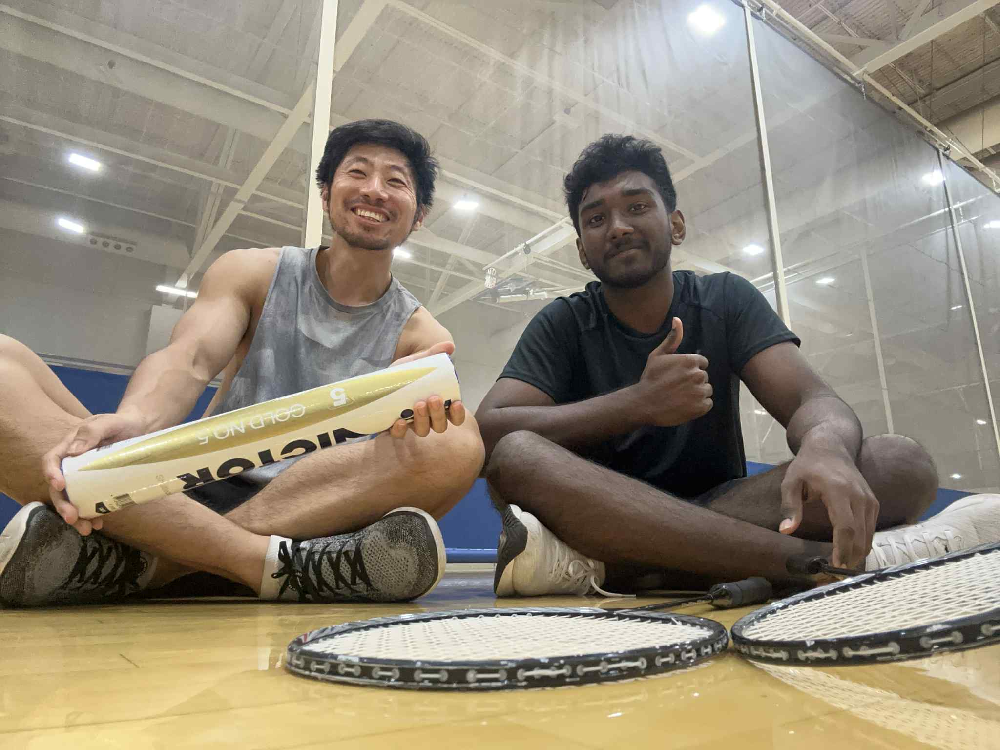

That spark became a flame during my stay in Tennessee later in the summer. There, I was introduced to the badminton club at Middle Tennessee State University, and an unexpected, beautiful journey unfolded. This is where I met Coach Niraj.
To him, I owe a debt of gratitude that is difficult to put into words. For the first time in my long, self-taught history with the sport, someone was showing me its true grammar. He saw not just what I was doing, but what I could do. Under his guidance, the chaotic movements of a lifetime began to find their purpose. For the first time, I felt I was truly learning badminton, not just playing it. But more than that, we connected on a level that transcended the court. We discovered we had so much in common. In his passion, his drive, and his perspective, I saw a reflection of myself. I always feel how amazing it is that such profound connections just happened in the most unexpected place. This is also where I met my Tennessee Squad: Shaili, Akka (Hima), Zam, and my Coach. We five just clicked - weThat summer was more than a return to a sport. It was a homecoming to a part of myself I had forgotten.